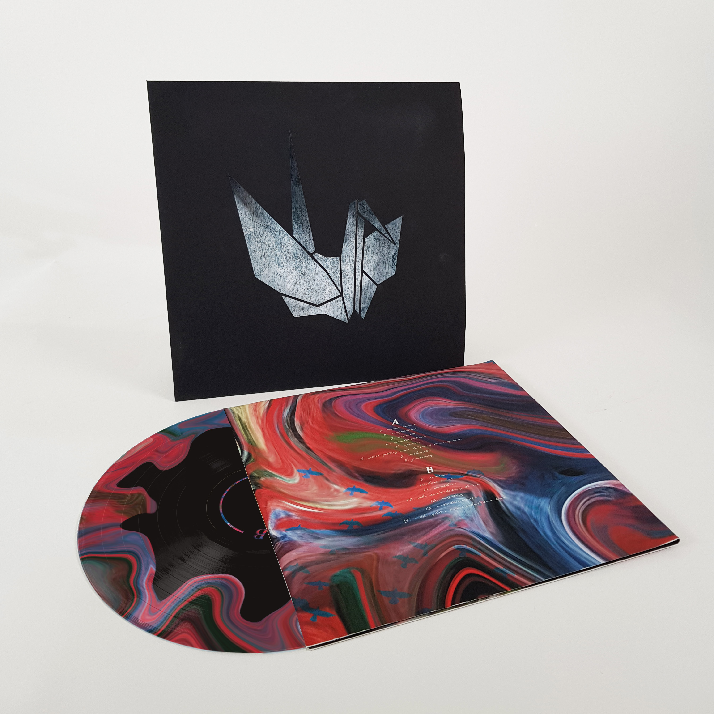
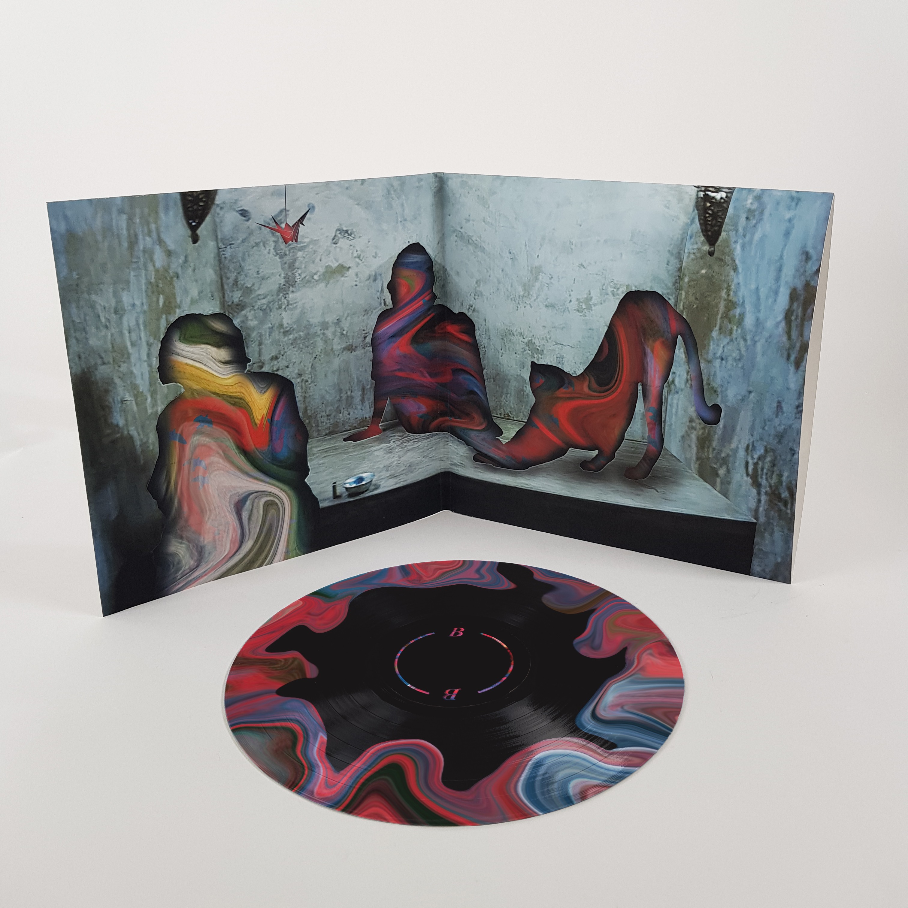
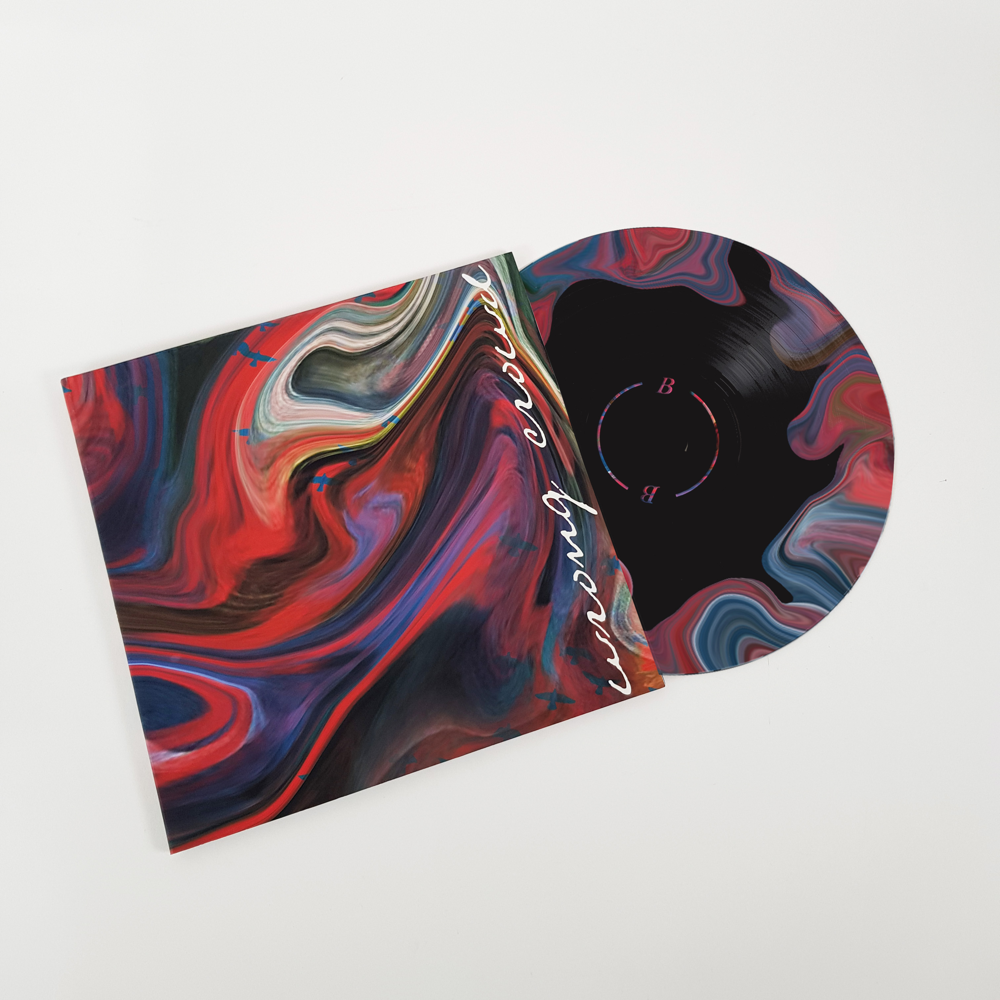
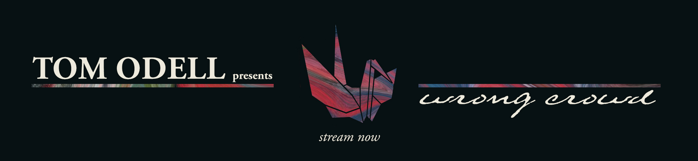
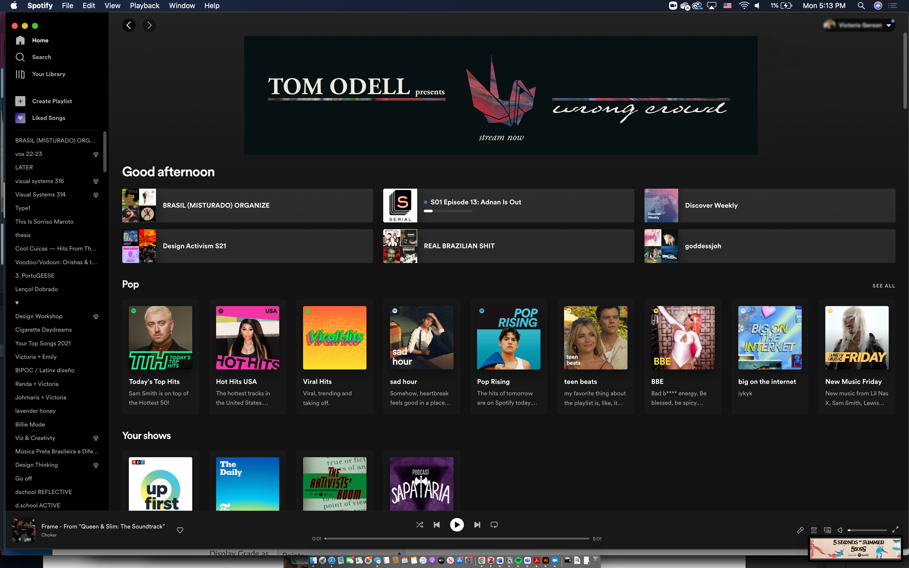
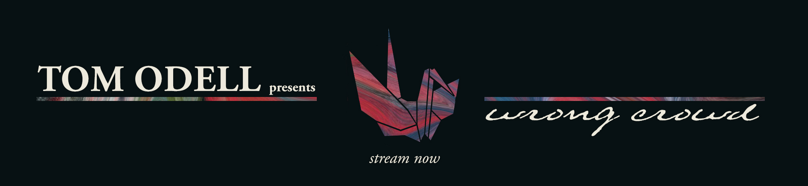
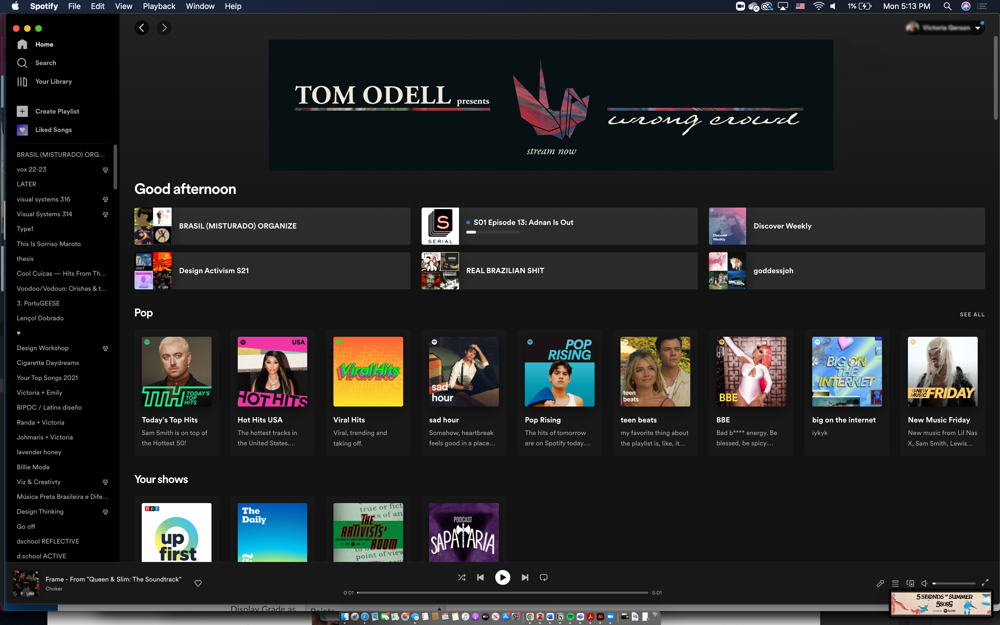

Wrong Crowd
visual systems - social change
designer
Tom Odell’s second studio album redesign inspired by topics of changing emotions, hope, and going through life’s ups and downs present on the tracks.
Why redesign Wrong Crowd?
This album is very dear to me personally. By redesigning it I want the visual branding to stand up to the music’s level and the themes talked in the tracks’ lyrics. The original design falls short in my opinion both next to the music, as well as other artistic materials related to the album such as promotional photography, and the music videos’ videography.

original design of the vinyl record
Research
Artist’s vision
In the interviews Odell gave as part of the album’s promotion, he mentioned that all the songs on the album were a part of the same person’s story. Something that stood out to me was his mention of memories and an idea of creating a non-linear narrative —that each song was a bit to the persona’s story, but much like recalling one’s own life, the bits of our past are intertwined with each other.
Something important in this redesign was to gather as much of the musician’s voice as possible to create the visuals that would and the artist’s presence.

mind map identifying themes in each of the songs on the album’s tracklist
Videography
Music videos accompanying the songs convey the “big and dramatic” aspects of Wrong Crowd’s tracks as well as the non-linear nature of the narrative successfully. The contrast in colours and scenes that tell different stories intertwined together showcase Odell’s vision for this album and create an almost dream-like nature that often accompanies memories.
Certain reocurring motifs from the videos were crucial inspiration for creating my visual language board. Some of the aspects of my system that were inspired by these videos were colour palette, and textures.
screen captures from musci videos capturing some of the ephemeral properties I was inspired by
Design
The album
The new cover design ties to the ideas of a non-linear narrative and different memories interwining by using three separate motifs: plain black, concrete, and a flluid mix of colours and creating an illusion of layers and openwork throughout all the planes of the album.
  Promotional materials
To expand the visual system beyond the album itself, I created a number of collateral graphics mainly tackling promotion for the release. These included a tour poster, a streaming service banner, and a now playing stop motion animation.
 



Social good
After researching Odell as an artist and as a person, I found that he often gets involved with social good campaigns and advocates on a number of different social justice topics. Seeing him play on a train station in Romania, where Ukrainain refugees fled to after the Russian invasion started as a way to show solidarity, I thought that if an album was being released at this time, Odell could have been vocal about the war in relation to it.